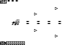

|
|
|||||||||||||
|
|||||||||||||
|
|||||||||||||
|
|||||||||||||
| 上下左右 | 移動・選択 |
| Aボタン | ショット・決定 |
| Bボタン | ボム・キャンセル |
| SELECTボタン | ウェポン変更 |
| STARTボタン | ポーズ |
ウェポン
キャラクターによって、それぞれ異なる2種類のショットが使えます。ゲーム中にSELECTボタンでいつでも切り替えることが出来ます。
|
ウルトリィ |
カミュ |
||
 |
 | ||
| 集中型 | ホーミング型 | 集中型 | 拡散型 |
ボム
画面左上のボムストックの数だけ、Bボタンでボムを発動させることが出来ます。ボムの効果はキャラクターによって異なります。また、敵の攻撃を受けた直後にボムを発動させることでダウンを防ぐ、いわゆる「喰らいボム」で緊急回避することも可能です。
| ウルトリィ | レーザー型 | 弾消しあり | ボム中ショット 発射不可能 |
|
| カミュ |  |
画面全体 | 弾消しなし | ボム中ショット 発射可能 |
アイテム
敵を倒すと、アイテムを落としていきます。アイテムを取っていくと、ショットがパワーアップします。攻撃を受けてダウンすると、ショットのパワーアップレベルが下がってしまうので気をつけましょう。また、ボスキャラはボムストックが増えるアイテムや、残機数が増えるアイテムを落とすこともあります。
チェーンシステム
雑魚敵を連続して倒すと、もらえる得点が
100→200→400→800→1600→3200→6400→12800→25600→51200（上限）
と増えていきます。倒しそこねた敵が画面外に消えた時点でチェーンはリセットされ、また100点からやり直しになるので、ウェポンの切り替えやボムなどを駆使して効率良く倒していきましょう。
またパワーアップアイテムも、連続して取っていくことで、同様にもらえる得点が増えていきます。
ボーナストラック
[bonustrack]フォルダに、ゲーム中のBGMをpmdファイルで入れてあります。P/ECE上でpmdファイルを演奏できるソフト、もしくはkBMedia Player（Kobarinさん作）にauPiECE.kpiプラグイン（Yui N.さん作）でお楽しみ下さい。
サポートページ
『Ｐ・Ｋ・Ｏ』購入者のためのサポートページを用意しました。今後、バージョンアップ版の配布や、ハイスコアを目指す上で役立つ得点システムなどの詳細の公開を予定しています。
http://zurachu.net/pko/support/
ユーザ名：pko
パスワード：0nka386ka1
スタッフ
（敬称略）
| Program | ヅラChu |
| Stage Design | |
| Game Graphic | |
| Character Graphic | KARASU |
| Game Music | MKT （一部原曲(c)Leaf/AQUAPLUS） |
| Special Thanks | ryong |
| Iwasaki++ | |
| Randomist | |
| Leaf/AQUAPLUS |